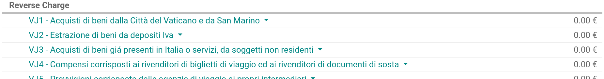

Italy¶
Configuration¶
Install the following modules to get all the features of the Italian localization:
Name |
Technical name |
Description |
|---|---|---|
Italy - Accounting |
|
Default fiscal localization package |
Italy - E-invoicing |
|
e-invoice implementation |
Italy - E-invoicing |
|
e-invoice withholding |
Italy - Accounting Reports |
|
Country-specific reports |
Italy - Stock DDT |
|
Transport documents - Documento di Trasporto (DDT) |
Company information¶
Configuring the company’s information ensures your Accounting database is properly set up. To add information, go to , and in the Companies section, click Update info. From here, fill out the fields:
Address: the address of the company;
VAT: VAT of the company;
Codice Fiscale: the fiscal code of the company;
Tax System: the tax system under which the company falls;
E-invoicing¶
The SdI is the electronic invoicing system used in Italy. It enables to send and receive electronic invoices to and from customers. The documents must be in XML format and formally validated by the system before being delivered.
To be able to receive invoices and notifications, the SdI service must be notified that the user’s files are to be sent to Odoo and processed on their behalf. To so, you must set up Odoo’s Codice Destinatario on the Agenzia Delle Entrate portal.
Go to https://ivaservizi.agenziaentrate.gov.it/portale/ and authenticate;
Go to section ;
Set the user as Legal Party for the VAT number you wish to configure the electronic address;
In , insert Odoo’s Codice Destinatario
K95IV18, and confirm.
Electronic Data Interchange (EDI)¶
Odoo uses the FatturaPA EDI format for the Italian localization and is enabled on the default journals when installed. When the file processing authorization has been set, all invoices and bills are automatically sent.
Note
You can enable electronic invoicing for other sales and purchase journals than the default ones.
You can check the current status of an invoice by the Electronic invoicing field. The XML file can be found in the chatter of the invoice.

See also
File processing authorization (Odoo)¶
Since the files are transmitted through Odoo’s server before being sent to the SdI or received by your database, you need to authorize Odoo to process your files from your database. To do so, go to .
There are three modes available:
- Demo
This mode simulates an environment in which invoices are sent to the government. In this mode, invoices need to be manually downloaded as XML files and uploaded to the Agenzia delle Entrate’s website.
- Test (experimental)
This mode sends invoices to a non-production (i.e., test) service made available by the Agenzia delle Entrate. Saving this change directs all companies on the database to use this configuration.
- Official
This is a production mode that sends your invoices directly to the Agenzia delle Entrate.
Once a mode is selected, you need to accept the terms and conditions by ticking Allow Odoo to process invoices, and then Save. You can now record your transactions in Odoo Accounting.
Warning
Selecting either Test (experimental) or Official is irreversible. Once in Official mode, it is not possible to select Test (experimental) or Demo, and same for Test (experimental). We recommend creating a separate database for testing purposes only.
Note
When in Test (Experimental) mode, all invoices sent must have a partner using one
of the following fake Codice Destinatario given by the Agenzia Delle Entrate:
0803HR0 - N8MIMM9 - X9XX79Z. Any real production Codice Destinario of your
customers will not be recognized as valid by the test service.

Taxes configuration¶
Many of the e-invoicing features are implemented using Odoo’s tax system. As such, it is very important that taxes are properly configured in order to generate invoices correctly and handle other billing use cases. For example, specific configurations are required for the reverse charge type of taxes. In case of a reverse charge tax, the seller does not charge the customer for the VAT but, instead, the customer pays the VAT themselves to their government. There are two main types:
External reverse charge¶
Invoices¶
To make an export invoice, make sure that the invoice lines all use a tax configured for reverse
charge. The Italian localization contains an example of a reverse charge tax for export in
the EU to be used as reference (0% EU, invoice label 00eu), which can be found under
. Exports are exempt from VAT, and therefore
reverse charge taxes require the Has exoneration of tax (Italy) option ticked, with
both the Exoneration kind and Law Reference filled in.

Note
If you need to use a different kind of Exoneration, click within the tax menu to create a copy of an existing similar tax. Then, select another Exoneration, and Save. Repeat this process as many times as you need different kind of Exoneration taxes.
Tip
Rename your taxes in the Name field according to their Exoneration to differentiate them easily.
On your invoice, select the corresponding tax you need in the Taxes field. You can find the following additional info by opening the XML file of the issued invoice:
SdI address (Codice Destinatario): must be filled for both EU or non-EU;
Country Id: must contain the country of the foreign seller in the two-letter ISO (Alpha-2) code (ex.,
ITfor ‘Italy’);CAP: must be filled with
00000;Partita Iva (VAT number): must contain the VAT number for EU businesses and
OO99999999999(double ‘O’ letter, not ‘zero’) for non-EU businesses. In case of private customers without VAT number, use0000000;Fiscal Code: for foreign entities without an actual Codice Fiscale, any recognizable identifier is valid.
Note
Odoo does not support sending user-modified XML files.
For invoices, multiple configurations are technically identified by a Tipo Documento code:
TD02- Down payments;TDO7- Simplified invoice;TD08- Simplified credit note;TD09- Simplified debit note;TD24- Deferred invoice.
Down payments.
Down payment invoices are imported/exported with a different Tipo Documento code
TDO2than regular invoices. Upon import of the invoice, it creates a regular vendor bill.Odoo exports moves as
TD02if the following conditions are met:
Is an invoice;
All invoice lines are related to sales order lines that have the flag
is_downpaymentset asTrue.
Simplified invoices, and credit/debit notes.
Simplified invoices and credit notes can be used to certify domestic transactions under 400 EUR (VAT included). Its status is the same as a regular invoice, but with fewer information requirements.
For a simplified invoice to be established, it must include:
Customer Invoice reference: unique numbering sequence with no gaps;
Invoice Date: issue date of the invoice;
Company Info: the seller’s full credentials (VAT/TIN number, name, full address) under ;
VAT: the buyer’s VAT/TIN number (on their profile card);
Total: the total amount (VAT included) of the invoice.
In the EDI, Odoo exports invoices as simplified if:
It is a domestic transaction (i.e., the partner is from Italy);
The buyer’s data is insufficient for a regular invoice;
The required fields for a regular invoice (address, ZIP code, city, country) are provided;
The total amount VAT included is less than 400 EUR.
Note
The 400 EUR threshold was defined in the decree of the 10th of May 2019 in the Gazzetta Ufficiale. We advise you to check the current official value.
Deferred invoices.
The deferred invoice is an invoice that is issued at a later time than the sale of goods or the provision of services. A deferred invoice has to be issued at the latest within the 15th day of the month following the delivery covered by the document.
It usually is a summary invoice containing a list of multiple sales of goods or services, carried out in the month. The business is allowed to group the sales into one invoice, generally issued at the end of the month for accounting purposes. Deferred invoices are default for wholesaler having recurrent clients.
If the goods are transported by a carrier, every delivery has an associated Documento di Transporto (DDT), or Transport Document. The deferred invoice must indicate the details of all the DDTs information for better tracing.
Note
E-invoicing of deferred invoices requires the l10n_it_stock_ddt
module. In this case, a dedicated Tipo Documento TD24
is used in the e-invoice.
Odoo exports moves as TD24 if the following conditions are met:
Is an invoice;
Is associated to deliveries whose DDTs have a different date than the issuance date of the invoice.
Vendor bills¶
Italian companies buying goods or services from EU countries (or services from non-EU countries) must send the information contained within the bill received to the Agenzia delle Entrate. This allows you to complete tax-related information on your bill, and to send it. The seller must be set as Cedente/Prestatore, and the buyer as Cessionario/Committente. Contained within the XML document for the vendor bill, the vendor’s credentials show as Cedente/Prestatore, and your company’s credentials as Cessionario/Committente.
Note
Self-billing invoices or VAT invoice integrations must be issued and sent to the tax agency.
When inputting taxes in a vendor bill, it is possible to select reverse charge taxes. These are
automatically activated in the Italian fiscal position. By going to , the 10% and 22% Goods and Services tax scopes
are activated and preconfigured with the correct tax grids. These are set up automatically to ensure
the correct booking of accounting entries and display of the tax report.
For vendor bills, three types of configurations are technically identified by a code called Tipo Documento:
TD17- Buying services from EU and non-EU countries;TD18- Buying goods from EU;TD19- Buying goods from a foreign vendor, but the goods are already in Italy in a VAT deposit.
Buying services from EU and non-EU countries:
The foreign seller invoices a service with a VAT-excluded price, as it is not taxable in Italy. The VAT is paid by the buyer in Italy;
Within EU: the buyer integrates the invoice received with the VAT information due in Italy (i.e., vendor bill tax integration);
Non-EU: the buyer sends themselves an invoice (i.e., self-billing).
Odoo exports a transaction as
TD17if the following conditions are met:
Is a vendor bill;
At least one tax on the invoice lines targets the tax grids VJ;
All invoice lines either have Services as products, or a tax with the Services as tax scope.
Buying goods from EU:
Invoices issued within the EU follow a standard format, therefore only an integration of the existing invoice is required.
Odoo exports a transaction as TD18 if the following conditions are met:
Is a vendor bill;
At least one tax on the invoice lines targets the tax grids VJ;
All invoice lines either have Consumable as products, or a tax with the Goods as tax scope.
Buying goods from a foreign vendor, but the goods are already in Italy in a VAT deposit:
From EU: the buyer integrates the invoice received with the VAT information due in Italy (i.e., vendor bill tax integration);
Non-EU: the buyer sends an invoice to themselves (i.e., self-billing).
Odoo exports a move as a TD19 if the following conditions are met:
Is a vendor bill;
At least one tax on the invoice lines targets the tax grid VJ3;
All invoice lines either have Consumable products, or a tax with Goods as tax scope.
Warning
Odoo does not offer the Conservazione Sostitutiva requirements. Other providers and Agenzia delle Entrate supply free and certified storage to meet the requested conditions.
Internal reverse charge¶
Warning
Odoo currently does not support domestic internal reverse charge processes.
‘Reverse Charge’ tax grids¶
The Italian localization has a specific tax grid section for reverse charge taxes. These tax grids are identifiable by the VJ tag, and can be found under .
San Marino¶
Invoices¶
San Marino and Italy have special agreements on e-invoicing operations. As such, invoices follow the regular reverse charge rules. Additional requirements are not enforced by Odoo, however, the user is requested by the State to:
Select a tax with the option Has exoneration of tax (Italy) ticked, and the Exoneration set to
N3.3;Use the generic SdI Codice Destinatario
2R4GT08. The invoice is then routed by a dedicated office in San Marino to the correct business.
Bills¶
When a paper bill is received from San Marino, any Italian company must submit that invoice
to the Agenzia delle Entrate by indicating the e-invoice’s Tipo Documento field with
the special value TD28.
Odoo exports a move as TD28 if the following conditions are met:
Is a vendor bill;
At least one tax on the invoice lines targets the tax grids VJ;
The country of the partner is San Marino.
Pubblica amministrazione (B2G)¶
Warning
Odoo does not send invoices directly to the government as they need to be signed. If we see that the codice destinatario is 6 digits, then it is not sent to the PA automatically, but you can download the XML, sign it with an external program and send it through the portal.
Digital qualified signature¶
For invoices and bills intended to the Pubblica Amministrazione (B2G), a Digital Qualified Signature is required for all files sent through the SdI. The XML file must be certified using a certificate that is either:
a smart card;
a USB token;
a Hardware Security Module (HSM).
CIG, CUP, DatiOrdineAcquisto¶
To ensure the effective traceability of payments by public administrations, electronic invoices issued to the public administrations must contain:
The CIG, except in cases of exclusion from traceability obligations provided by law n. 136 of August 13, 2010;
The CUP, in case of invoices related to public works.
If the XML file requires it, the Agenzia Delle Entrate can only proceed payments of electronic invoices when the XML file contains a CIG and CUP. For each electronic invoice, it is necessary to indicate the CUU, which represents the unique identifier code that allows the SdI to correctly deliver the electronic invoice to the recipient office.
Note
The Codice Unico di Progetto) and the CIG must be included in one of the 2.1.2 (DatiOrdineAcquisto), 2.1.3 (Dati Contratto), 2.1.4 (DatiConvenzione), 2.1.5 (Date Ricezione), or 2.1.6 (Dati Fatture Collegate) information blocks. These correspond to the elements named CodiceCUP and CodiceCIG of the electronic invoice XML file, whose table can be found on the government website.
The CUU must be included in the electronic invoice corresponding to the element 1.1.4 (CodiceDestinario).